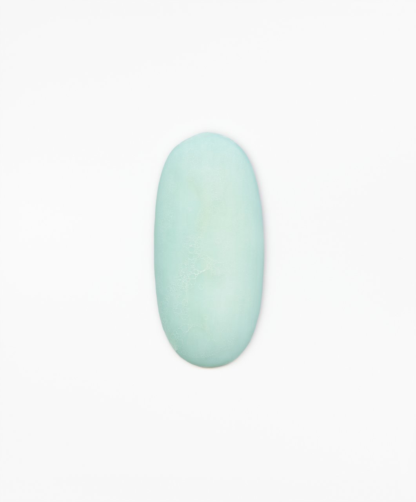

구본창 / KOOBOHNCHANG / 具本昌 / photography
Soap_Ink on Paper_80x66cm_2006
물은 비누를 녹여서 거품을 만들고 우리는 이 거품으로 몸의 때를 씻어낸다. 때로는 비누의 거품이 서정적인 형태로 나타나서 경이로움을 자아내기도 하지만, 비누에 관한 가장 중요한 사실은 비누는 결코 멈추는 법이 없이 끊임없이 소멸된다는 것이다.
그렇다면, 우리가 비누의 마지막 순간을 목격하는 경우가 거의 없다는 것은 놀라운 일이 아닐 수 없다. 거의 다 써서 닳아지거나, 실수로 하수구에 빠뜨리거나, 또는 새 비누에 합해 버리거나, 그냥 없어져 버리는 것이다. 아무도 주의하지 않는다. 비누는 결국 거품이 되어 씻겨나간다.
비누와 돌멩이는 비슷한 점이 있다. 돌멩이를 은자라 한다면 비누는 얼굴 없는 노동자라고 말할 수 있다.
돌멩이는 연장을 사용하여 광채와 개성이 넘치는 예술가, 장인, 또는 완고한 노인의 상으로 변화시킬 수 있다.
그러나 비누는 그렇지 않다. 비누에서 찾을 수 있는 구체적인 표현이라면 거품이 만들어 내는 동그라미일 뿐이다.
비누에서 살아가는 행위는 곧 죽어가는 행위이다 인간과 인간의 사물 모두가 씻겨져 없어진다. 꽃과 구름 등 자연 풍경은 아름답다. 그리고 숟가락이나 강 위의 다리 등과 같이 인간이 만들어낸 사물들 또한 아름답다. 세상의 모든 아름다운 것들 중에서 한 사진작가가 비누를 자신의 작품의 대상으로 선택하였다. 왜 그랬을까?
그 이유는 비누의 존재와 사진이라는 예술활동의 본질간에 깊은 연관이 있기 때문이다.
Soap
